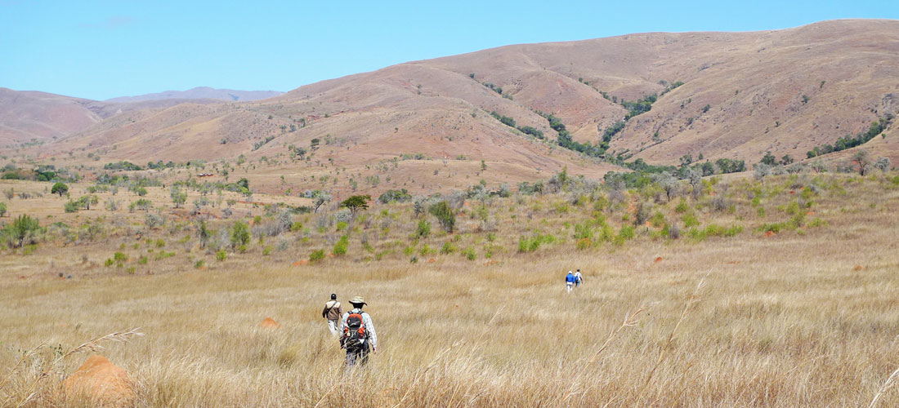
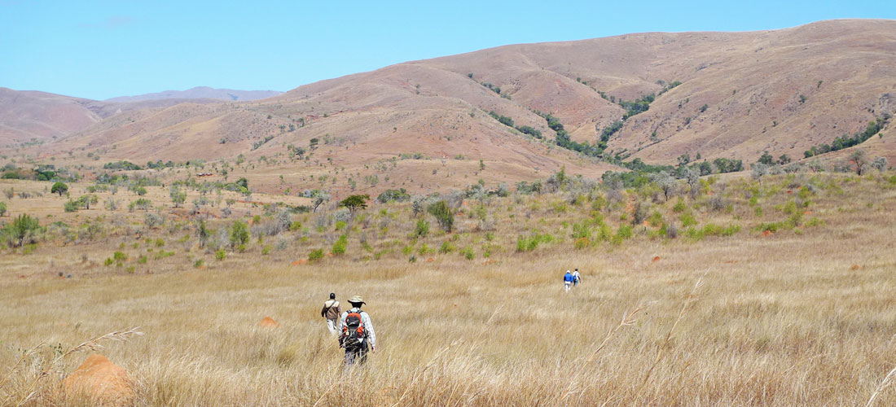

物理探査
鉱物資源および地熱資源を対象とした物理探査では、航空機による空中電磁・磁気・重力・放射能探査や地上での電気探査、磁気探査、重力探査などを行い、測定されたデータを解析することで、地下の比抵抗、磁力、重力などの構造を推定します。成果物として、各探査手法の各種解析平面・断面図、三次元解析図などを作成します。地盤の微小振動を観測する微動アレイ探査による地盤や断層の調査も行っています。
1. 電気・電磁探査
電気探査は大地へ流した電流の応答から地下の電気特性を調べる手法で、比抵抗法やIP法があります。電磁探査は地表や空中から送信した電磁波の応答から地下の電気特性を調べるもので、MT法、AMT法、CSAMT法、TEM法などがあります。地下資源の探査だけではなく、地すべりなどの土木地質調査、断層や火山などの科学的調査にも適しています。
当社は米国のTechnoImaging社の日本国内での代理店として業務を実施しており、世界的に評価の高い同社の三次元解析技術を提供することができます。同社が開発したEMVisionRソフトウェアで物理探査データの三次元解析モデルを作成します。

AMT法電磁探査（測定中）
2. 重力・磁気探査
重力探査は重力加速度を測定する手法で、通常の地上における測定だけでなく、空中重力偏差法などの最新技術の調査も可能です。磁気探査は地表や空中で地磁気を観測する手法です。両者ともに鉱物資源、石油天然ガス、地熱資源の探査および断層や火山の調査に適します。また、重力探査は地表付近の空洞の調査に、磁気探査は金属埋設物の調査にも用いられます。

重力探査（重力計読み取り中）
チリでの磁気探査：測定器と測定作業員
3. 微動アレイ探査
微動アレイ探査は、地表の微弱な震動（微動）を複数の地震計で観測して、地下の地震波伝播速度を調べる手法です。大小さまざまな規模の地盤調査、各種の資源探査、断層や泥火山の調査に適しており、新しい地下構造調査法として注目されています。
微動アレイ探査の測定機器
お問い合わせ・ご注文
住鉱資源開発株式会社
資源環境調査部
〒105-0001
東京都港区虎ノ門3丁目8-21
虎ノ門33森ビル5F
TEL：03-5405-2172 /
FAX：03-5405-2175